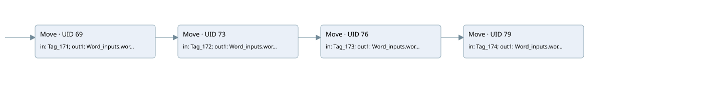

word input
main · 검색 색인 순서 3 · 원본 내부 NID 추정 1
백업 PLF 원본의 3187770 바이트 위치에서 복원한 XML. 검색 문서 1614의 객체 키 16102200a36b000000000000와 연결했다. 이름 해석 8/8개. 남은 RefId는 상수 또는 미해석 참조다.
연결 구조 다시 그리기
원본 Part/PCon/Wire를 이용한 연결도다. TIA 화면의 래더 배치 또는 실행 결과를 재현한 그림은 아니다. 핀 연결은 아래 표와 원본 XML을 기준으로 읽는다. 노드 위에 마우스를 두면 피연산자 이름을 볼 수 있다.

접점·코일·블록과 피연산자
| Part UID | Gate | Negated 핀 | 연결 피연산자 |
|---|---|---|---|
| 69 | Move | in = Tag_171; out1 = Word_inputs.word1 | |
| 73 | Move | in = Tag_172; out1 = Word_inputs.word2 | |
| 76 | Move | in = Tag_173; out1 = Word_inputs.word3 | |
| 79 | Move | in = Tag_174; out1 = Word_inputs.word4 |
접점 경로를 펼친 조건식
Contact·O/A·비교기의 원본 연결을 읽기 쉽게 펼친 보조 해석이다. POWER는 전원 레일 시작을 뜻한다. 호출 블록·에지·타이머의 내부 동작과 다중 쓰기 순서는 이 표로 실행 검증하지 않았다. 미해석 핀과 RefId는 원문 연결표에서 확인한다.
| UID | 동작 | 대상 | 원본 접점 경로 | 내용 |
|---|---|---|---|---|
| 69 | Move | Word_inputs.word1 | POWER | Move 입력 Tag_171 |
| 73 | Move | Word_inputs.word2 | Move UID 69.eno (블록 동작 확인) | Move 입력 Tag_172 |
| 76 | Move | Word_inputs.word3 | Move UID 73.eno (블록 동작 확인) | Move 입력 Tag_173 |
| 79 | Move | Word_inputs.word4 | Move UID 76.eno (블록 동작 확인) | Move 입력 Tag_174 |
원본 배선 연결
| Wire UID | 동일 Wire 연결 끝점 |
|---|---|
| 92 | ORef 82 (Tag_171) ↔ Part 69.in |
| 93 | Part 69.out1 ↔ ORef 83 (Word_inputs.word1) |
| 94 | Part 69.eno ↔ Part 73.en |
| 95 | ORef 84 (Tag_172) ↔ Part 73.in |
| 96 | Part 73.out1 ↔ ORef 85 (Word_inputs.word2) |
| 97 | Part 73.eno ↔ Part 76.en |
| 98 | ORef 86 (Tag_173) ↔ Part 76.in |
| 99 | Part 76.out1 ↔ ORef 87 (Word_inputs.word3) |
| 100 | Part 76.eno ↔ Part 79.en |
| 101 | ORef 88 (Tag_174) ↔ Part 79.in |
| 102 | Part 79.out1 ↔ ORef 89 (Word_inputs.word4) |
| 103 | Powerrail {} ↔ Part 69.en |
식별자 해석 근거 8개
| ORef UID | RefId | 이름 | IdentXmlPart 파일 | 해석 방법 |
|---|---|---|---|---|
| 82 | 1 | Tag_171 | 0692-IdentXmlPart.xml | UID/RID + search-text + NID agreement |
| 83 | 3 | Word_inputs.word1 | 0690-IdentXmlPart.xml | UID/RID + search-text + NID agreement |
| 84 | 5 | Tag_172 | 0692-IdentXmlPart.xml | UID/RID + search-text + NID agreement |
| 85 | 6 | Word_inputs.word2 | 0690-IdentXmlPart.xml | UID/RID + search-text + NID agreement |
| 86 | 8 | Tag_173 | 0692-IdentXmlPart.xml | UID/RID + search-text + NID agreement |
| 87 | 9 | Word_inputs.word3 | 0690-IdentXmlPart.xml | UID/RID + search-text + NID agreement |
| 88 | 11 | Tag_174 | 0692-IdentXmlPart.xml | UID/RID + search-text + NID agreement |
| 89 | 12 | Word_inputs.word4 | 0690-IdentXmlPart.xml | UID/RID + search-text + NID agreement |
검색 코드 보조 자료
참조 명칭을 찾기 위한 자료이며 실행 순서나 AND/OR 관계는 위 연결표로 확인한다.
move "tag_171" move "tag_172" move "tag_173" move "tag_174" "word_inputs".word1 "word_inputs".word2 "word_inputs".word3 "word_inputs".word4